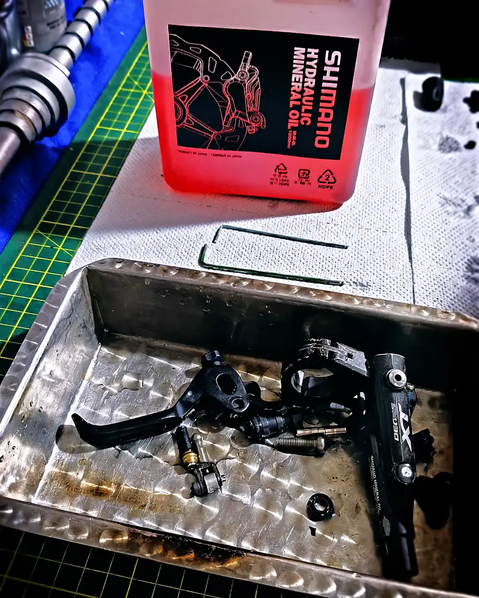
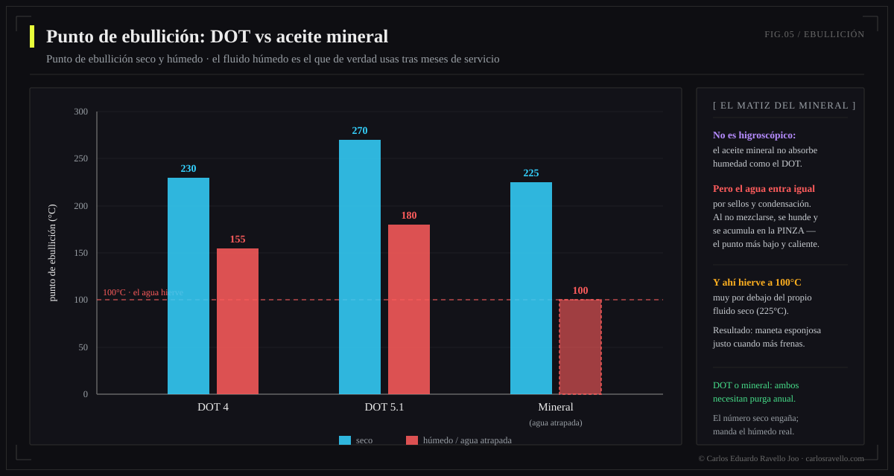
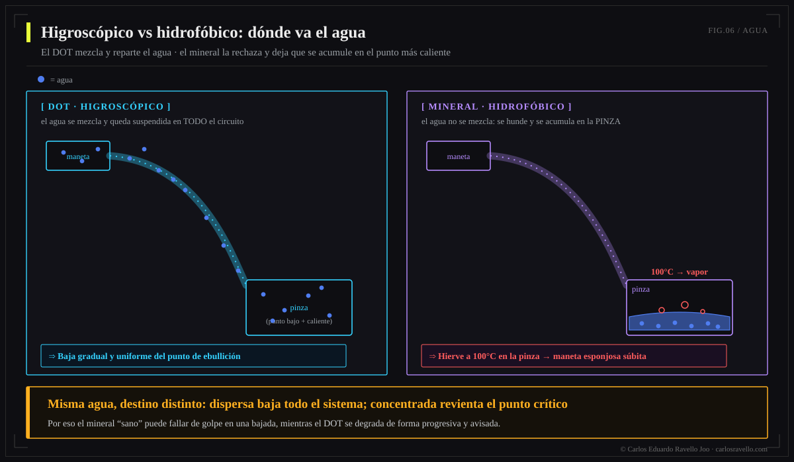

DOT y aceite mineral no son intercambiables: distinta química, distintos sellos. El DOT (base glicol, sellos EPDM) es higroscópico —absorbe agua y baja su ebullición con el tiempo (DOT 5.1: ~270°C seco → ~180°C húmedo)— y tolera más calor; lo usan SRAM, Hope, Hayes, Formula. El aceite mineral (base petróleo, sellos nitrilo) es hidrofóbico y estable, pero el agua se acumula en la pinza y hierve a 100°C; lo usan Shimano, Magura, TRP y el nuevo Brembo GR-PRO. Usa el de tu fabricante y nunca los mezcles.
Esta es la pieza de fluido de la Enciclopedia del Freno Hidráulico. La pregunta "¿DOT o mineral?" está mal planteada: no eliges tú, lo decide el diseño de tu freno. Lo que sí puedes —y debes— entender es por qué son incompatibles y cómo falla cada uno, porque eso cambia tu mantenimiento.
Dos químicas, dos mundos

El DOT (Department of Transportation, el estándar automotriz) tiene base de glicol-éter. El aceite mineral tiene base de petróleo refinado. No es una diferencia de marca: es de familia química, y arrastra todo lo demás —cómo tratan el agua, qué sellos toleran, cómo envejecen—.
| Propiedad | DOT 4 | DOT 5.1 | Aceite mineral |
|---|---|---|---|
| Base química | Glicol-éter | Glicol-éter | Petróleo refinado |
| Ebullición en seco | ~230°C | ~270°C | ~225°C |
| Ebullición húmedo | ~155°C | ~180°C | n/a (no absorbe) |
| Relación con agua | Higroscópico | Higroscópico | Hidrofóbico |
| Corrosivo / daña pintura | Sí | Sí | No |
| Sellos compatibles | EPDM | EPDM | Nitrilo |
| Intervalo de cambio | 6-12 meses | 6-12 meses | 12-24 meses |

La paradoja del agua: dónde termina importa
El agua es el enemigo común, pero la enfrentan al revés. El DOT la absorbe y la suspende por todo el circuito: el punto de ebullición baja de forma gradual y global. El mineral la rechaza: el agua, más densa, cae al punto más bajo y caliente —la pinza— donde, bajo el calor de una frenada, hierve a 100°C y genera vapor compresible: maneta esponjosa de golpe (fade súbito) y corrosión localizada.

Por qué nunca mezclarlos
El glicol (DOT) y el petróleo (mineral) atacan sellos distintos. Poner DOT en un sistema de mineral —o viceversa— hincha, ablanda o disuelve los retenes (EPDM vs nitrilo) en horas: fugas, pérdida de presión y maneta al manillar. No hay "purga de emergencia" que lo arregle; toca reconstruir con los sellos correctos.
Qué fluido usa cada marca
| Aceite mineral | DOT (4 / 5.1) |
|---|---|
| Shimano | SRAM / Avid |
| Magura | Hope |
| TRP · Tektro | Hayes |
| Campagnolo · Clarks | Formula |
| Brembo GR-PRO (2026, fórmula propia) | — |
Dato fresco: parte de la línea MTB moderna de SRAM migró a mineral (DB8, Maven), y el Shimano XTR M9220 (2025) estrenó un aceite mineral de baja viscosidad que resolvió el "punto de mordida errante". La industria premium se inclina al mineral por su estabilidad y porque no daña pintura ni es tóxico. Ante cualquier duda, lee la tapa del depósito o el manual: el fabricante imprime cuál corresponde.
Intervalos y buenas prácticas
Cambia el DOT cada 6-12 meses (y antes en clima húmedo) por su higroscopía; el mineral cada 12-24 meses. Siempre con fluido nuevo y sellado —un bote de DOT abierto empieza a absorber humedad—. Y recuerda: el cambio de fluido no limpia un sistema ya contaminado; eso es otra historia.
BikeLab Studio.
Preguntas Frecuentes
¿Puedo usar DOT en un freno de aceite mineral (o al revés)?
No, nunca. Son químicas incompatibles: el DOT usa sellos de EPDM y el mineral, nitrilo. El fluido equivocado hincha o disuelve los sellos en horas, provoca fugas y deja el freno sin presión. Usa exclusivamente el que indica tu fabricante.
¿Qué fluido usa mi marca de frenos?
Mineral: Shimano, Magura, TRP, Tektro, Clarks, Campagnolo y el nuevo Brembo GR-PRO. DOT: SRAM/Avid, Hope, Hayes y Formula. SRAM migró parte de su MTB a mineral (DB8, Maven). Revisa la tapa del depósito o el manual.
¿Por qué el DOT pierde potencia con el tiempo?
Porque es higroscópico: absorbe humedad y eso baja su punto de ebullición (de ~270°C seco a ~180°C húmedo en DOT 5.1). En bajadas largas hierve antes, genera vapor y la maneta se vuelve esponjosa. Por eso se cambia cada 6-12 meses.
Si el mineral no absorbe agua, ¿es inmune?
No. Es hidrofóbico, así que el agua que entra no se mezcla: se acumula en la pinza (el punto más bajo y caliente) y hierve a 100°C bajo calor de frenada, provocando fade súbito y corrosión. Es más estable, pero igual se cambia (12-24 meses).
¿DOT 4 o DOT 5.1?
Si tu freno acepta ambos, el 5.1 tiene mayor ebullición (~270/180°C) que el 4 (~230/155°C), mejor para descensos exigentes. Ambos son glicol y compatibles entre sí. Nunca uses DOT 5 (silicona): es otra química incompatible.
Referencias
- BikeRadar — Brake fluid: mineral oil vs DOT.
- Epic Bleed Solutions — DOT vs mineral oil; ebullición seco/húmedo e higroscopía.
- Manuales de fabricante (Shimano, SRAM, Magura, Hope) — tipo de fluido y sellos.
- Pinkbike — Brembo GR-PRO (aceite mineral de fórmula propia, 2026).